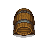

Wine making barrel
It can be built in the basement of sweet home.
| Wine making barrel | |
|---|---|
 | |
Basic information
| |
Required Technology :
|
Winemaking |
Related pages :
|
Farming |
Building Information
| |
Horizontal x Vertical :
|
4x4 |
Rotatable :
|
True |
Location(s)
| |
| Cellar | |

The wine making barrel is used to brew red wine.
Cost
| Icon | Materials Required | Energy | Notes |
|---|---|---|---|

|
12× Flitch |
12 |
Requires: Winemaking |
Recipes
| Item Produced | Materials Required | Time | Notes | Downgrade |
|---|---|---|---|---|
| 20× red wine |
2× Pail of grape juice |
6:00 |
|
Base downgrade: |

| ||||||||